Color Contrast
in Movies
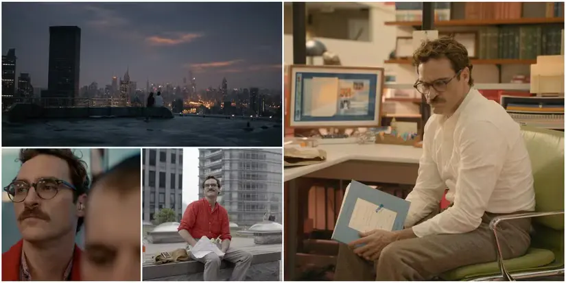
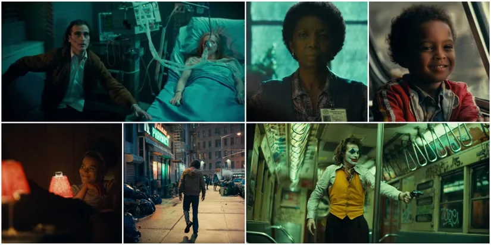
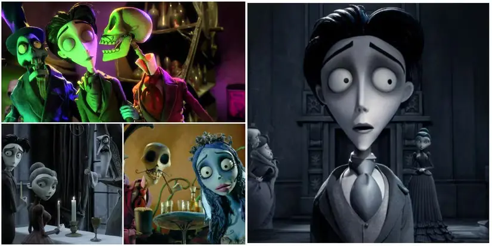
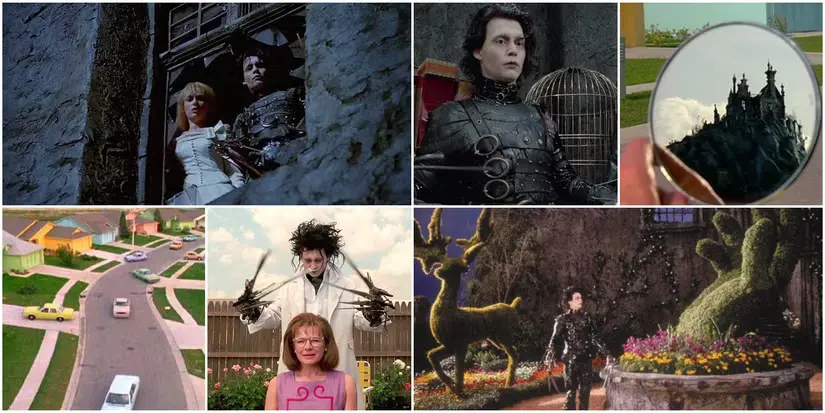
Meaning
A set of priniciples that combine science and art to understand how colors interact, mix, and affect human emotions and perceptions.
The colors a filmmaker chooses aren't just aesthetic decisions. They're storytelling decisions. They tell us who a character is, what a world feels like, and where the emotion of a scene is headed. Color triggers emotional and psychological responses that are almost involuntary. In general, warm tones like reds, oranges, and ambers tend to feel energetic, intimate, or dangerous depending on context. Cool tones, like blues, greens, grays, can read as calm, melancholy, clinical, or otherworldly. Within each color are a multitude of hues you can break down even further to specifically hone in on the exact level of emotion you're seeking.
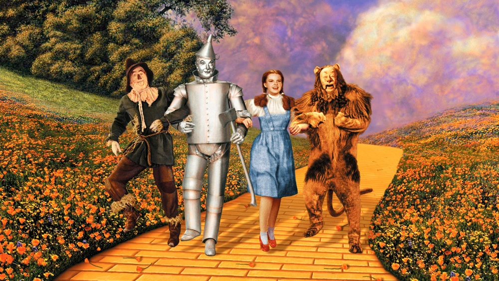
- Low Contrast
- Soft
- Flat
- Muted
- Nostalgic
- Somber
- Hazy
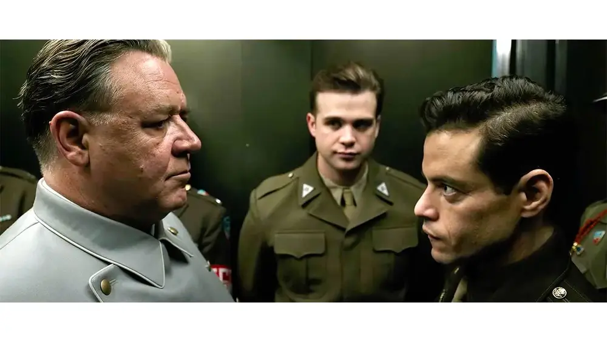
- High Contrast
- Tension
- Suspense
- Emotion
- Clarity
- Focus
- Intensity
Low Contrast in Film
(High-Key Lighting)
Barbie (2023)
Low contrast occurs when there is only a small difference between the lightest and darkest parts of an image, creating a soft and evenly lit look. In Barbie, high-key lighting minimizes shadows and keeps nearly every part of the frame visible. Even though the colors are bright and saturated, the lighting remains smooth and balanced, giving the film its artificial, dreamlike, and idealized aesthetic.
Watch MovieHigh Contrast in Film
(Low-Key Lighting)
Oppenheimer (2023)
High contrast is created when there is a strong difference between bright highlights and deep shadows. Oppenheimer uses low-key lighting and stark black-and-white imagery to emphasize this effect. The sharp contrast enhances tension, isolates subjects, and reinforces the film’s serious and psychological tone, making scenes feel more intense and dramatic.
Watch MovieBalanced Color Contrast
Balanced color contrast in film refers to the strategic use of colors to create a visually stable, harmonious image while still providing enough separation to guide the viewer’s eye. It often combines two distinct concepts: color balance (neutralizing unwanted color casts) and color contrast (using differences in hue to create depth).
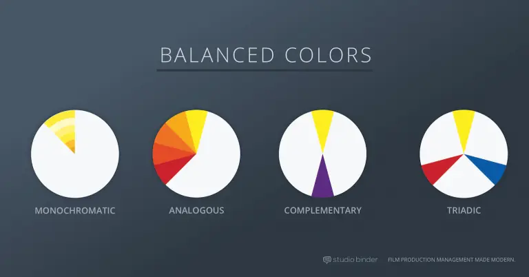
Let's look at some movie color palette examples and the various ways they are used.
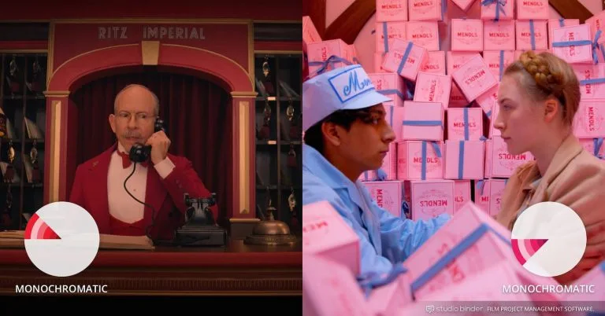
Monochromatic
Monochromatic color schemes come in shades of a single color such as red, dark red, and pink. They create a deeply harmonious feeling that is soft, lulling, and soothing. We see this in The Grand Budapest Hotel (2014).
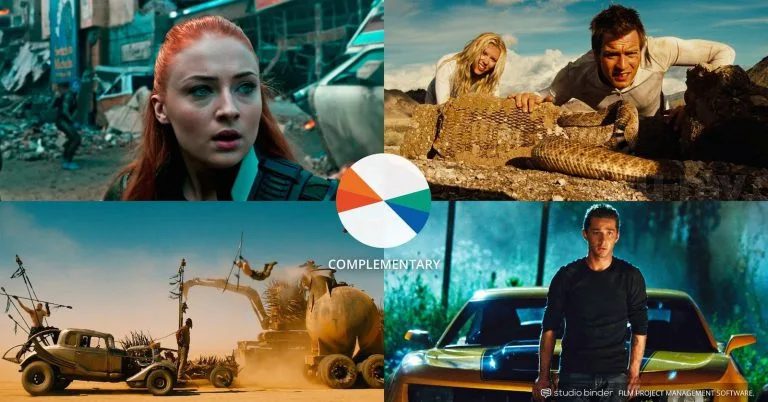
Complementary
Complementary colors live opposite each other on the color wheel. For example, orange and blue are complementary colors commonly used in many blockbuster films. The dueling colors are often associated with conflict, whether internal or external. No matter the color selection, complementary colors combine warm and cool colors to produce a high-contrast, vibrant tension in the film.
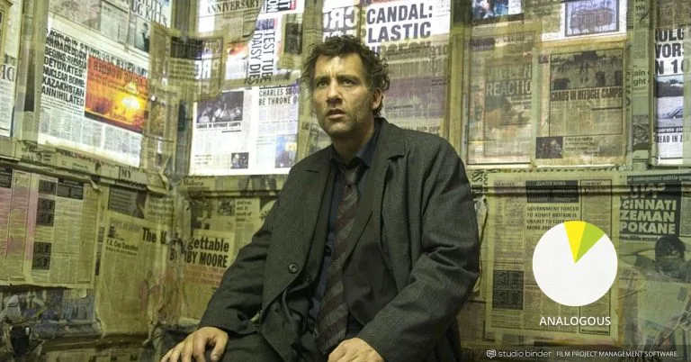
Analogous
Analogous colors neighbor each other on the color wheel (e.g., red/violet or yellow/lime green). Since the colors don’t have the contrast and tension of the complementary colors, they create an overall harmonious and soothing viewing experience. Analogous colors are easy to take advantage of in landscapes and exteriors as they are often found in nature. One color can be chosen to dominate, a second to support, and a third (along with blacks, whites, and grey tones) to accent.
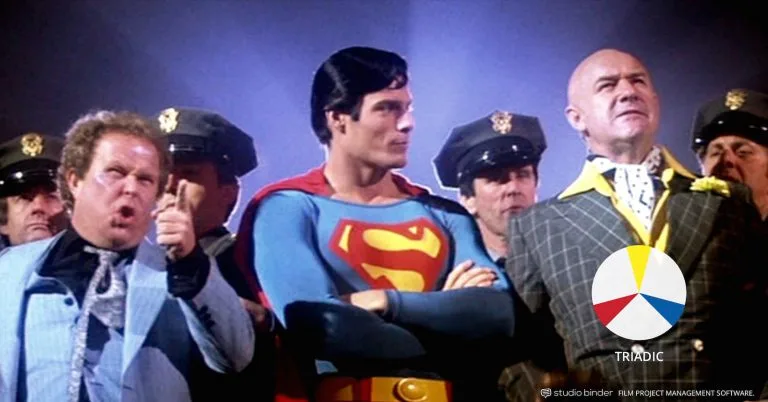
Triadic
Early Technicolor films often used green in a relatively straightforward way, emphasizing its association with nature and the outdoors. The Adventures of Robin Hood (1938), for example, features lush green forests that serve as both a setting and a symbol of Robin Hood’s connection to the natural world and his fight for freedom.